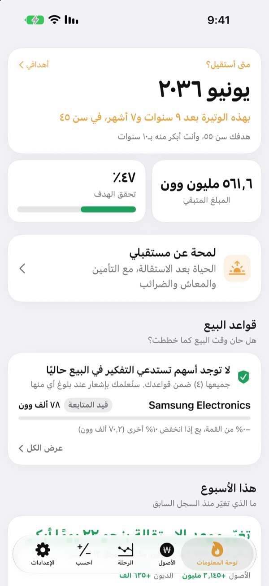
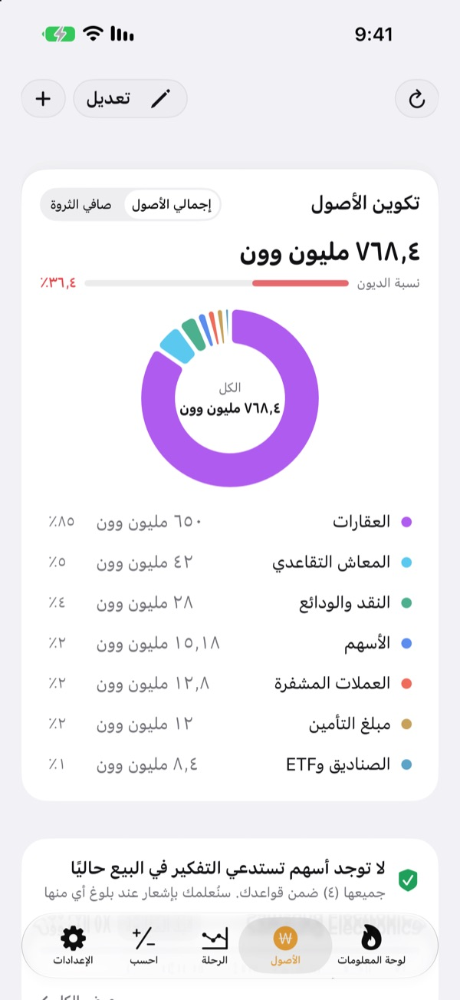
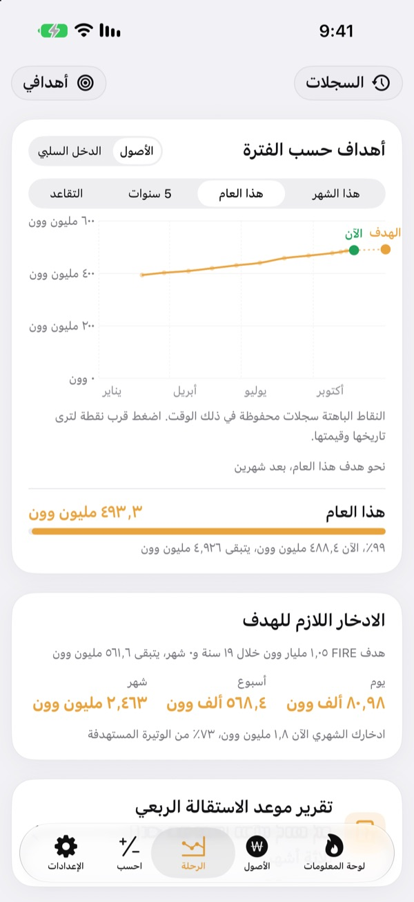
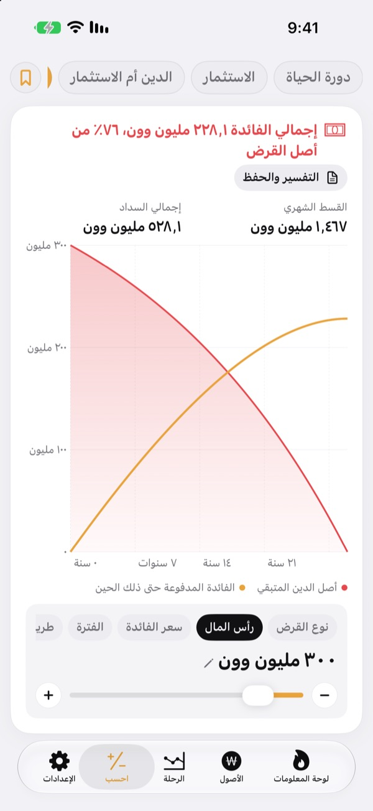

متى تستطيع ترك العمل؟
بالأرقام لا بالتخمين
أدخل مصروفك وما ادّخرته، فيظهر لك الشهر الذي تستطيع فيه الاستقالة. ومع كل تغيّر في أصولك ترى فورًا هل اقترب هذا الموعد أم ابتعد.
بلا حساب. سجلاتك تبقى على جهازك.

احسب موعد استقالتك
حرّك المؤشرات، فالحساب هنا هو نفسه الذي يجريه التطبيق في شاشته الأولى.
ما زلت تحسب في رأسك: «هل أستطيع الاستقالة الآن؟»
حين تتوزّع أموالك بين حساب البنك وتطبيق الوساطة والتقاعد ودفعة الإيجار المقدّمة، يصبح حتى مجموع ما تملكه غامضًا، فيبقى موعد استقالتك مجرد تخمين. يجمع Toesagak كل أصولك في شاشة واحدة، ويعيد حساب الشهر الذي تستطيع فيه ترك العمل من ذلك المجموع باستمرار.
كل أصولك في شاشة واحدة
العقارات والأسهم والصناديق وصناديق ETF والتقاعد والنقد والودائع ودفعات الإيجار المقدّمة والعملات المشفّرة والقروض، مصنّفة حسب النوع مع إجمالي الأصول وصافي الثروة ونسبة الدين.
تُجلب أسعار الأسهم والعملات المشفّرة لتبقى القيم محدّثة، ولقطة شاشة واحدة من تطبيق الوساطة تكفي لإدخال ممتلكاتك وقيمها دفعة واحدة.

كم تحتاج يوميًا لتصل
شاهد أهداف هذا الشهر وهذه السنة والسنوات الخمس والتقاعد مع سجلاتك السابقة في رسم بياني واحد، واعرف كم عليك أن تدّخر في اليوم أو الأسبوع أو الشهر لتبقى على المسار.
حين تتغيّر أصولك يُحفظ سجل ذلك الأسبوع تلقائيًا، فيتكوّن تاريخك من تلقاء نفسه.

احسبها قبل القرارات الكبيرة
حاسبات لمسار ثروتك على مدى العمر، والاستثمار، والمقارنة بين سداد الدين والاستثمار، والقروض، والادخار والودائع، والقوة الشرائية لراتبك، وتحويل المال إلى ساعات عمل. حرّك أي قيمة فيُعاد رسم المنحنى، ويبقى المنحنى السابق خطًا منقّطًا للمقارنة.
سمِّ الإعدادات التي تعود إليها كثيرًا واحفظها.

ثلاث خطوات للبدء
- 1
أدخل مصروفك وعمرك
الأرقام التقريبية تكفي، وسيظهر موعد استقالتك فورًا.
- 2
أضف أصولك
كلما فصّلتها أكثر، صار الموعد أدق.
- 3
راجعه بين حين وآخر
تتراكم السجلات الأسبوعية تلقائيًا، ويمكنه تذكيرك في اليوم الأول من كل شهر.
كيف يحسب التطبيق
- المبلغ المستهدف
- مصروف سنة بعد ترك العمل ÷ معدل السحب الآمن (عند 4% يعادل مصروف 25 سنة)
- موعد الاستقالة
- الشهر الذي يبلغ فيه صافي ثروتك الهدف، بعد إضافة ما تدّخره شهريًا وتنميته بالعائد المتوقع
- إجمالي الأصول
- مجموع كل ما تملكه
- صافي الثروة
- إجمالي الأصول مطروحًا منه الديون كالقروض
- نسبة الإنجاز
- صافي الثروة ÷ المبلغ المستهدف، ويمكنك متابعتها أيضًا على أساس الدخل السلبي
- ما يمكنك تغييره
- المصروف الشهري، ومعدل السحب من 2 إلى 6%، والعائد السنوي المتوقع من 0 إلى 12%، والعمر الذي تودّ ترك العمل فيه
كل النتائج حسابات استرشادية مبنية على ما تدخله، وليست نصيحة استثمارية.
أسئلة شائعة
أين تُحفظ سجلاتي؟
على جهازك فقط. لا يوجد تسجيل، ولا يُرسل شيء إلى المطوّر. فعّل مزامنة iCloud من الإعدادات لترى السجلات نفسها على iPhone وiPad عبر حساب iCloud الخاص بك.
الأسعار لا تتحدّث.
الأسهم الأمريكية والكورية والعملات المشفّرة وأسعار الصرف تعمل دون أي إعداد. تأكّد من اتصالك بالإنترنت ومن صحة الرمز أو الكود. أما أسعار الشقق فتعتمد على بيانات العقارات العامة في كوريا، وتحتاج إلى إدخال مفتاح خدمة مجاني في الإعدادات.
ما الفرق بين إجمالي الأصول وصافي الثروة؟
إجمالي الأصول هو مجموع كل ما تملكه، وصافي الثروة هو ذلك المجموع مطروحًا منه الديون كالقروض. ويُحسب موعد استقالتك على أساس صافي الثروة.
كيف أنقل سجلاتي إلى جهاز جديد؟
استخدم التصدير في الإعدادات لإنشاء ملف نسخة احتياطية، واحفظه في تطبيق الملفات أو iCloud Drive أو البريد، ثم استعده على الجهاز الجديد. ملفات النسخ الاحتياطي لا تتضمن مفاتيح API أبدًا. كما يحتفظ التطبيق تلقائيًا بآخر 20 نسخة احتياطية على الجهاز.
كيف تعمل تنبيهات البيع؟
حدّد لكل استثمار مقدار الهبوط المسموح من أعلى قيمة له أو سعرًا مستهدفًا، وحين يتجاوز ذلك الحد يصلك تنبيه. ولا ينبّهك عند الصعود. تُفحص الأسعار حين تفتح التطبيق وحين يسمح iOS بذلك في الخلفية (عادةً كل بضع ساعات)، لذا فهي ليست مراقبة لحظية.
هل يمكنني إخفاء أرقامي عن الآخرين؟
فعّل قفل التطبيق من الإعدادات ليُفتح بـ Face ID أو برمز الدخول. ومع تفعيل القفل لا يعرض التذكير الشهري أي أرقام أيضًا.
هل يمكنني التجربة أولًا؟
فعّل البيانات التجريبية من الإعدادات لتتصفّح كل الشاشات بأصول شخص افتراضي، وعند إيقافها تعود سجلاتك كما هي. لا تتوفر البيانات التجريبية أثناء تفعيل مزامنة iCloud.
كيف أحذف كل بياناتي؟
حذف التطبيق يزيل كل السجلات المحفوظة على الجهاز. وإن أردت الاحتفاظ بنسخة، فصدّر ملف نسخة احتياطية من الإعدادات أولًا.
هل أستثمر بناءً على هذه الأرقام؟
نتائج Toesagak حسابات استرشادية مبنية على ما تدخله وعلى عائد مفترض، وليست نصيحة استثمارية. والنتائج الفعلية تعتمد على السوق وعلى ظروفك.
للإبلاغ عن خطأ أو اقتراح فكرة أو طرح سؤال، راسلنا على leeo@kakao.com.